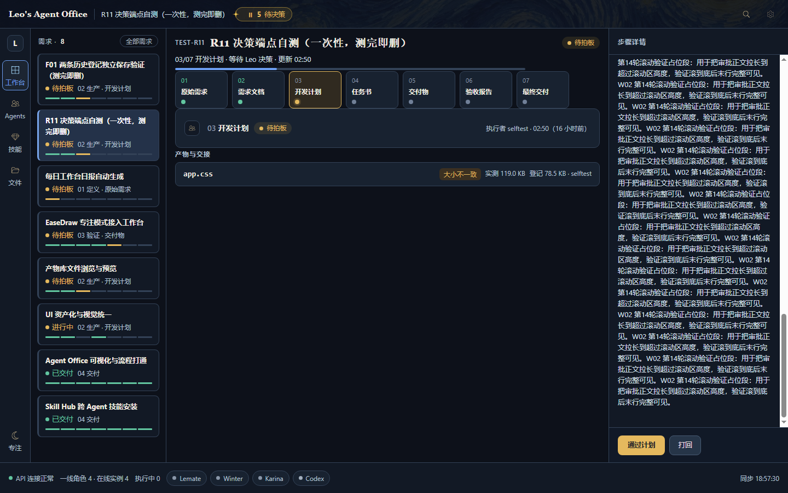
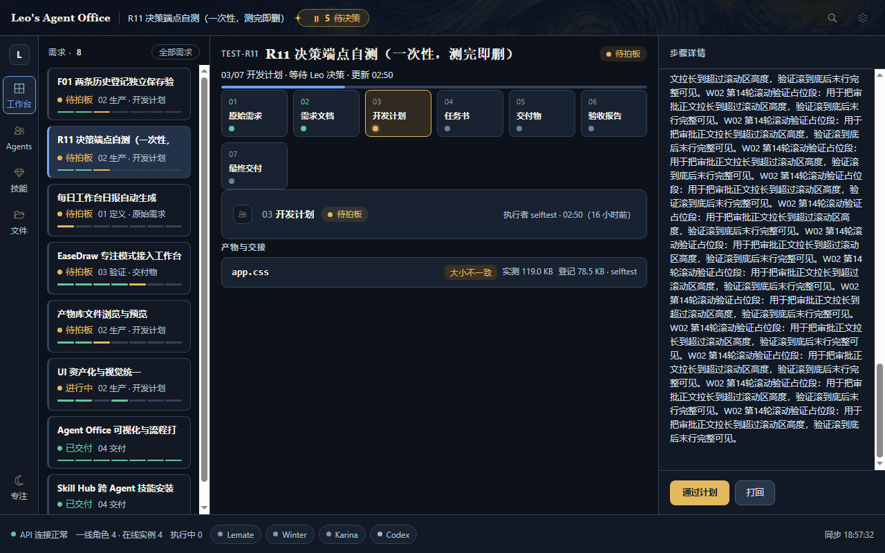
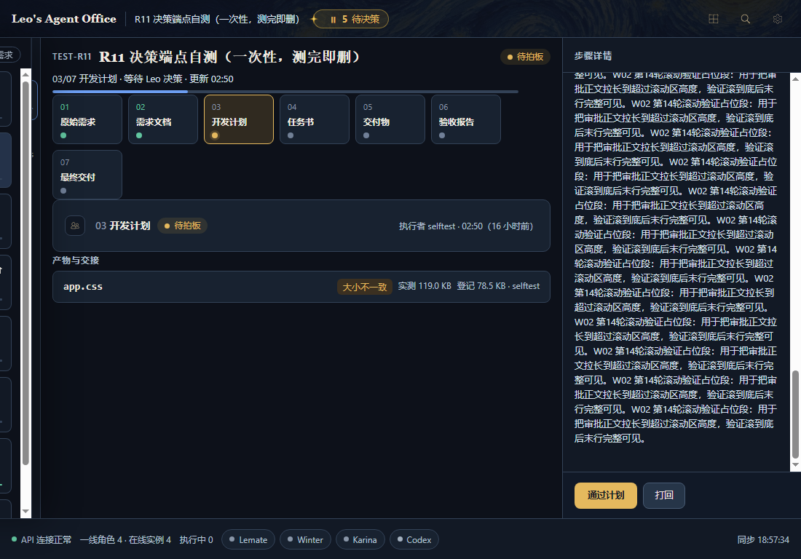

| 任务书要求 | 现状（源码位置） | 本轮实测（三视口一致） |
|---|---|---|
| 顶部 48px 固定区 | web/app.css:1667-1669 .insp-head{height:48px} | head 高 48.0px，stackOk=true |
| 中部 min-height:0; overflow-y:auto | web/app.css:376 | auto / 0px，三段邻接 |
| 正文 13px / 20px / #D6E0ED | web/app.css:1866-1869（G01 r12） | 13px / 20px / rgb(214,224,237) |
| 左右内边距 16px、底部 24px | web/app.css:376 padding:12px 16px 24px | 12px 16px 24px |
| 底部 64px 固定区 | web/app.css:1670-1676 | 64.0px，bodyR.bottom = footR.top |
| 底栏背景 #111927 | web/app.css:1674（W02 r13） | rgb(17,25,39) |
| 上边框 1px 实线 #334257 | web/app.css:1674（W02 r13） | 1px solid rgb(51,66,87) |
| 不改两个审批操作 | 未触碰 app.js，data-decide 委托不变 | [通过计划, 打回] 正常渲染 |
web/index.html:85-90：#inspector 纵向 flex 三段（.insp-head / #insp-body / #insp-foot）。A = 真实审批内容；B = 注入长段落（滚动压力）。注入 + 滚动 + 测量在同一 eval 原子完成，不受 3 秒轮询重渲染影响。
| 指标 | 1440×900 A / B | 1280×800 A / B | 1100×768 A / B |
|---|---|---|---|
| 滚动区高 clientHeight | 680 / 680 | 580 / 580 | 548 / 548 |
| scrollHeight | 1273 / 2317 | 1273 / 2317 | 1273 / 2317 |
| 滚底 maxScroll → scrollTop 实达 | 593→593 / 1637→1637 | 693→693 / 1737→1737 | 725→725 / 1769→1769 |
| 末行底边 lastBottom | 756.0 / 744.0 | 656.0 / 644.0 | 624.0 / 612.0 |
| 滚动区可视底边 = 底栏顶边 | 780 | 680 | 648 |
| 末行完整可见（≤ 可视底边） | true / true | true / true | true / true |
| 正文与操作区重叠 | false / false | false / false | false / false |
| 末行 ↔ 底栏间距 | 24.0 / 36.0 px | 24.0 / 36.0 px | 24.0 / 36.0 px |
| 滚前 / 滚后底栏在视口内 | true / true | true / true | true / true |
| 外层位移（scrollXY + #center rect） | 零变化 | 零变化 | 零变化 |
| 横向溢出 doc / body | 0 / 0 | 0 / 0 | 0 / 0 |
#insp-foot 是纵向 flex 的固定兄弟（flex:none; height:64px，非绝对定位），滚动不改变其盒位置。#insp-body：overflow-y auto · min-height 0px · padding 12px 16px 24px · 滚动条宽 15px（Windows 经典滚动条，已计入内容宽）.insp-head 高 48px；#insp-foot 高 64px · background rgb(17,25,39) · border-top 1px solid rgb(51,66,87).ev-src，同规则覆盖 .ip-note/.rej-why/.ev-demand）：13px / 20px / rgb(214,224,237)

